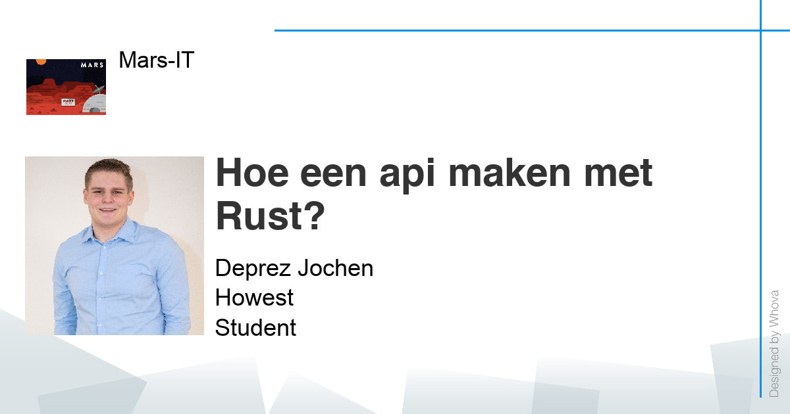

MARS IT 2052
27 januari 2021 - volledige dag - online
Kennismaken met het geven van een talk op een conferentie
Op het einde van de examenperiode was er nog één evaluatiemoment. Dit evaluatiemoment was de MARS IT 2052 conferentie van de derdejaarsstudenten Software Engineering van de Howest. Hierbij moest iedere student een talk van 15 à 20 minuten geven over een trending topic. Iedere student moest dus presenteren, maar ook de andere studenten hun talks volgen en de evaluatieformulieren invullen.
Gevolgde talks:
- "Programmeerpardigma's" van Brecht Vermeersch
- "Tailwindcss" van Maarten Vansever
- "Hoe lisp u verplicht anders te denken" van Joey Lybaert
- "Hoe maak ik mijn eigen programmeertaal?" van Lisa Dewaele
- "React js" van Jan Claeys
- "Nut van goede documentatie, community en online support" van Jens Inghelbrecht
- "Datomic" van Niels van Goethem
- "Discovering Ruby on Rails framework" van Hubert Jarocki
- "Clojure" van Raf De Roos
Daarnaast heb ik ook een eigen sessie gegeven. Deze sessie ging over het opstellen van een api in Rust. Rust is een taal die meer en meer aan het opkomen is en is eigenlijk ook een zeer goede programmeertaal. Via mijn talk heb ik zowel proberen uit te leggen waarom Rust een goede taal is, maar ook wat de moeilijkheden zijn. Rust is namelijk niet volledig perfect en soms zullen er wel wat problemen zijn.
Conclusie
Deze talks hebben ons al studenten meer doen nadenken over hoe we iets het best kunnen brengen. Dit was een opdracht die ons volledig uit onze comfortzone haalde. Al bij al denk ik dat we mogen trots zijn op het resultaat die we met alle studenten bekomen hebben. Ik vond namelijk dat het een behoorlijk kwalitatief evenement was, waar je ook dingen kon bijleren. Het evenement was dus ondanks alle stress vooraf zeer leerrijk, zowel op vlak van kennis opdoen als op vlak van het leren presenteren voor een onbekend publiek/vragen beantwoorden over een bestudeerde technologie.